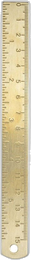

Aqidah Sohihah
Menanamkan kecintaan dan iman yang kokoh kepada Allah SWT.

Sekolah Dasar Tahfidz Qur'an di bawah sejuknya Objek Wisata Cipanas Garut, Full Day School berafiliasi resmi ke Dinas Pendidikan.
Terwujudnya penyelenggara pendidikan yang melahirkan peserta didik yang beriman, beradab, berilmu sesuai panduan Al-Qur’an.
Motto utama: Iman, Adab, Ilmu
Menanamkan kecintaan dan iman yang kokoh kepada Allah SWT.
Membentuk akhlakul karimah, wudhu syar'i, dan etika kesantunan.
Hafalan Al-Qur'an metode Sima'i & 100 Hadits pilihan.
Ditambah Pelajaran Umum (Disdik): kurikulum Fardhu Kifayah berafiliasi Dinas Pendidikan.
Pengasuh dan tenaga pendidik berdedikasi membimbing para santri.
Kompasiana · Kang Aip
Perenungan mendalam mengenai ikhtiar Yayasan ATTAMAM Garut membangun benteng moral, adab, dan hafalan Al-Qur'an bagi generasi muda di tengah dinamika zaman.
baca di Kompasiana ↗Dejurnal.com · Berita Garut
Laporan wartawan mengenai konsistensi SDTQ ATTAMAM menghadirkan pendidikan islami full day school berbasis Tahfidz dan Adab Hasanah di objek wisata Cipanas Garut.
baca di Dejurnal.com ↗KoranMandala.com · Kanal Edukasi
Ulasan mengenai perkembangan pesat model pembelajaran Al-Qur'an, Hadits pilihan, dan kurikulum Disdik yang terintegrasi di SDTQ ATTAMAM.
baca di KoranMandala ↗BeritaDisdik.com · Arif al-Garuti
Catatan perjalanan dan wawancara khusus mengenai nilai-nilai kejujuran, wudhu syar'i, dan pembentukan adab sejak usia dini.
baca di BeritaDisdik ↗